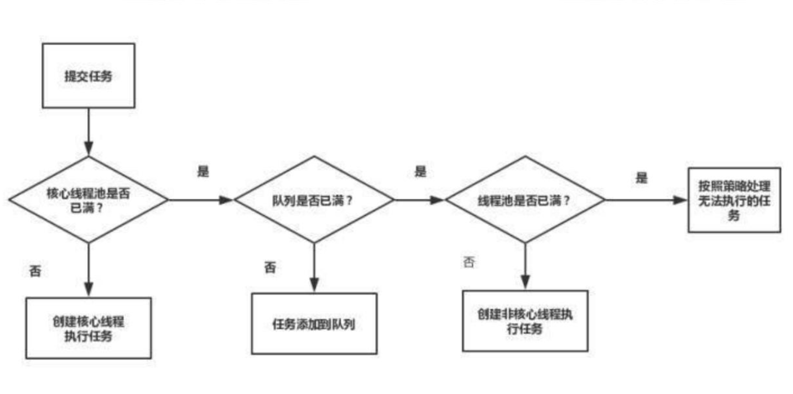
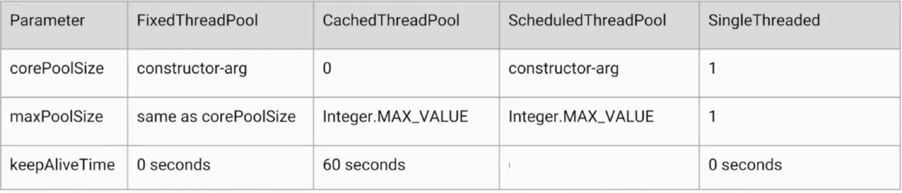

背景
为什么使用线程池
问题一：反复创建线程开销大
问题二：过多的线程会占用太多内存
解决以上两个问题的思路
用少量的线程——避免内存占用过多
让这部分线程都保持工作，且可以反复执行任务——避免生命周期 的损耗
使用线程池的好处
- 加快响应速度
- 合理利用CPU和内存
- 统一管理
线程池的使用场景
- 服务器接收到大量请求时，使用线程池技术是非常合适的，它可 以大大减少线程的创建和销毁次数，提高服务器的工作效率
- 实际上，在开发中，如果需要创建5个以上的线程，那么就可以使 用线程池来管理
线程池构造参数
| 参数名 | 类型 | 含义 |
|---|---|---|
| corePoolSize | int | 核心线程数 |
| maxPoolSize | int | 最大线程数 |
| maxPoolSize | long | 最大保活时间 |
| workQueue | BlockingQueue | 任务存储队列 |
| threadFactory | ThreadFactory | 当线程池需要新的线程的时候， 会使用 threadFactory来生成新的线程 |
| Handler | RejectedExecutionHandle r | 由于线程池无法接受你所提交的任务的 拒绝策略 |
corePoolSize和maxPoolSize
corePoolSize指的是核心线程数
- 线程池在完成初始化后，默认情况下，线程池中并没有任何线程， 线程池会等待有任务到来时，再创建新线程去执行任务
最大量maxPoolSize
- 在核心线程数的基础上，额外增加的线程数的上限
keepAliveTime
- 如果线程池当前的线程数多于corePoolSize，那么如果多余的 线程空闲时间超过keepAliveTime，它们就会被终止
ThreadFactory
- 新的线程是由ThreadFactory创建的，默认使用 Executors.defaultThreadFactory()
- 创建出来的线程都在同一个线程组，拥有同样的 NORM_PRIORITY优先级并且都不是守护线程。
- 如果自己指定ThreadFactory，那么就可以改变线程名、线程组、优先级、是否是守护线程等。
- 通常使用默认的ThreadFactory就可以了
workQueue
有3种最常见的队列类型：
1) 直接交接：SynchronousQueue
2) 无界队列：LinkedBlockingQueue
3) 有界的队列：ArrayBlockingQueue
添加线程规则
如果线程数小于corePoolSize，即使其他工作线程处于空闲状 态，也会创建一个新线程来运行新任务。
如果线程数等于（或大于）corePoolSize但少于 maximumPoolSize，则将任务放入队列。
- 如果队列已满，并且线程数小于maxPoolSize，则创建一个新 线程来运行任务。
- 如果队列已满，并且线程数大于或等于maxPoolSize，则拒绝 该任务。

是否需要增加线程的判断顺序是：
- corePoolSize
- workQueue
- maxPoolSize
线程数量设定
CPU密集型（加密、计算hash等）：最佳线程数为CPU核心数的1-2倍左右。
耗时IO型（读写数据库、文件、网络读写等）：最佳线程数一 般会大于CPU核心数很多倍
参考Brain Goetz推荐的计算方法：
线程数=CPU核心数*（1+平均等待时间/平均工作时间
常见线程池分析
特点
- FixedThreadPool : 固定线程数量
- CachedThreadPool : 具有自动回收多余线程的功能
- ScheduledThreadPool :支持定时及周期性任务执行的线程池
- SingleThreadExecutor :只会用唯一的工作线程来执行任务,原理和FixedThreadPool是一样的，但是此时的线程数量被设 置为了1
构造参数

阻塞队列
FixedThreadPool和SingleThreadExecutor的Queue是 LinkedBlockingQueue
由于是固定线程，为了满足执行更多的任务 选用了无界队列。
CachedThreadPool使用的Queue是SynchronousQueue
队列不用来存储任务，要求每个任务必须有返回结果，采用交接队列。
ScheduledThreadPool来说，它使用的是延迟队列 DelayedWorkQueue
定时任务搭配DelayedWorkQueue。
拒绝策略
- AbortPolicy : 拒绝了 直接抛异常
- DiscardPolicy :默默的丢弃掉。不会得到通知
- DiscardOldestPolicy :丢弃最老的，存最新的
- CallerRunsPolicy :线程池没办法处理的话，谁提交的任务谁来做，负反馈，它一直在提交，让它干点任务， 等一下，也给线程池多点时间
线程池状态
| 说明 | 状态 |
|---|---|
| RUNNING | 接受新任务并处理排队任务 |
| SHUTDOWN | 不接受新任务，但处理排队任务 |
| STOP | 不接受新任务，也不处理排队任务，并中断正在进行的任务 |
| TIDYING | 所有任务都已终止，workerCount为零时，线程会转换到 TIDYING状态，并将运行terminate（）钩子方法 |
| TERMINATED | terminate（）运行完成 |
使用线程池的注意点
- 避免任务堆积
- 避免线程数过度增加
- 排查线程泄漏
- 和ThreadLocal配合
勾子方法实践
在任务执行前后，可以利用勾子函数 打印一些日志信息等,下面代码利用勾子函数在执行任务前进行判断，实现线程池的暂停操作。
1 | import java.util.concurrent.BlockingQueue; |

...
...
This is copyright.